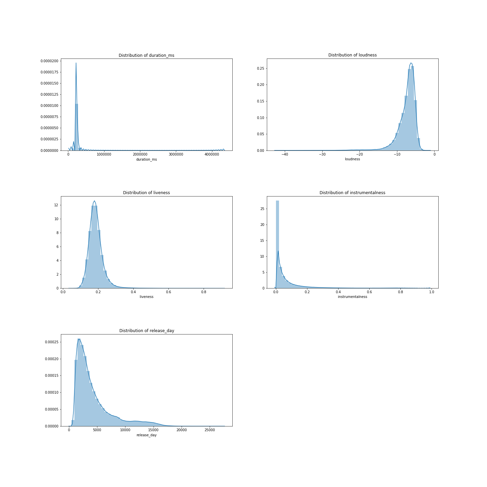

Exploratory Data Analysis
Contents
Description of Data
Distribution of Data
To perform exploratory data analysis, we compute the mean of each feature over all tracks in each playlist. This allows us to have a multi-parameter space where each playlist is denoted by a single point.

The figure above shows the distribution of each feature in our data. We observe that the features follow unimodal distributions, some approximately normal. This indicates that songs on average show a spread for example in energy, danceability, tempo, key, and valence, and there are no non-conditional parameter induced separations in the data. In other words, considering the songs as a whole, their features do not show a clear separability. A couple of characteristic such as duration_ms, loudness, liveness, instrumentalness, and release_day, show an apparent heavy-tail, which might be of interest to understand why it occurs. For example, the heavy-tail of the release_date suggests that some rather old songs are timeless classics.
Correlation Matrix

From the correlation matrix, we find some interesting relationship between features. The pairs (acousticness, energy) and (acousticness, loudness) are strongly negatively correlated, while (loudness, energy) are strongly positively correlated. This make sense mathematically due to transitivity and logically as acousticness is likely associated with more soft musically and therefore not loud. However, the positive correlation between loudness and energy is insightful as it sheds some light of what a rather obscure term, such as song energy, could represent.
K-Means Clustering
To discover and study the clusters of playlists in our data, we use the $k$-means algorithm. We believe this algorithm is both robust and interpretable enough for our data. To determine the optimal number of clusters, the model's free parameter, we use the elbow and the silhouette methods.
The Elbow Method
While we want the distortion to be small, we want to make sure that the number of clusters we choose is not large. If the number of clusters equals the number of observations, we would have a distortion of zero, but each observation would belong to its own cluster and our model will not generalize. Therefore, we use the elbow method to help us find the optimal value of k. We note that elbow method for continuous or not clearly separable data will likely not display a clear kink, and such is the case in our present study as can be seen in figure 3. Nevertheless it allows us to observe the trade-off between distortion and number of clusters and it appears that a good value of k is 4.
The Silhouette Method
Another method to decide the number of clusters to use is silhouette analysis. The silhouette method measures the separation distance between the different clusters. More specifically, it measures the distance of each point in one cluster to points in the neighboring clusters. This allows us to visually assess the number of clusters. The silhouette coefficients have a range of [-1, 1]. The value of silhouette coefficients is as follows,
- +1 indicates that the observation is far away from the neighboring clusters.
- 0 indicates that the observation is near the decision boundary of two neighboring clusters.
- -1 indicates that the observation is assigned to the wrong cluster.
Clusters
To visualize our data and potential clusters, we choose two variables, danceability and energy, and train our k-means model. The results are shown in figure 4. Notice the five clusters, their centroids, and apparent Voronoi cell structure, which is again indicative of continous data. In order to understand what these clusters represent, we generate a word cloud of all track names in each cluster.
Word Cloud
By analyzing the artists in each cluster, we can deduce the genre of the playlists. Cluster 0 contains Luke Bryan, Florida Georgia Line, and other names of country artists. We also see Panic by the Disco, Red Hot Chilli Peppers, and other names of alternative rock artists. Cluster 1 is composed of playlists that contain music created by Frank Sinatra and Michael Bublé, artists known for their jazz/swing music. Cluster 2 shows male rap music. Cluster 3 shows playlists with music from Justin Beiber, John Mayer, Ed Sheeran, and other pop artists.